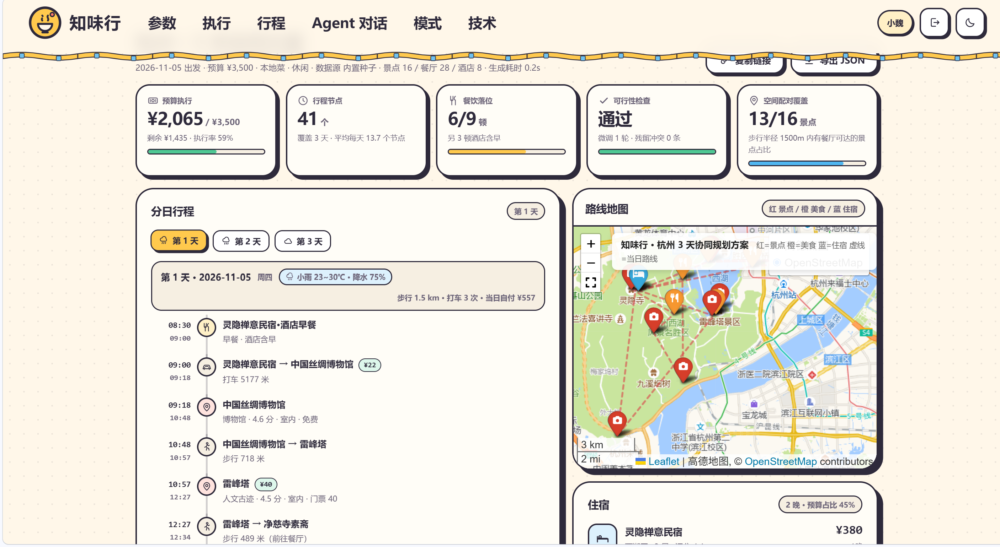
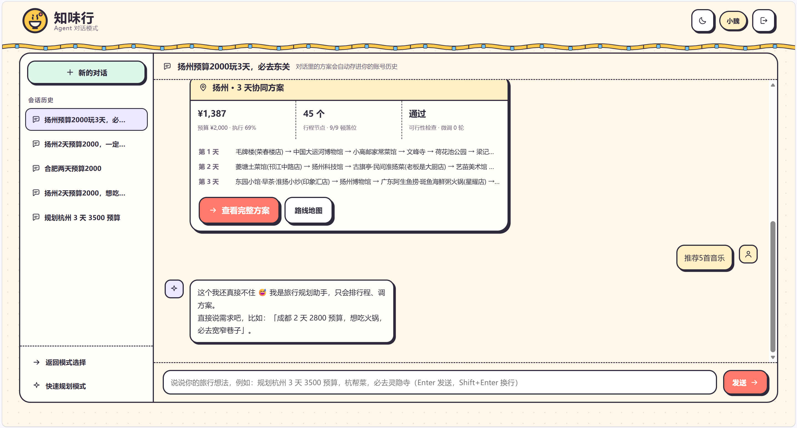

知味行 TasteJourney
项目概要：针对传统旅行规划中景点、餐饮、住宿割裂推荐、预算静态切分的问题，基于 LangGraph 构建 12 节点多智能体流水线，采用 Send API 实现景点、酒店、美食、天气四路并行采集；设计景点与餐厅的 空间配对算法，支持 500 m 步行圈半径可调，并完成逐分钟时间窗对齐；以 Event-Sourcing 模式实现 预算管家，住宿结余自动全局重分配；引入 Plan-Execute-Reflect 可行性闭环，对紧凑度、排队、 天气冲突自动回滚重排；支持高德真实 POI 与本地种子数据双数据源，断网环境可完整演示。
技术栈：Python · LangGraph · FastAPI · MySQL · SQLite · 高德地图 API · Leaflet · PWA
主要职责：独立完成系统架构设计、核心算法实现与项目答辩演示；实现空间、 时间、预算三维联合求解与 SSE 流式执行轨迹可视化；设计对话式规划模式，实现意图路由、参数抽取 与会话内增量调整，支持大模型与规则引擎双轨；实现账号体系与方案、会话历史的持久化；编写测试 覆盖地理计算、预算回放与端到端流程，景点餐厅配对率与餐饮落位率较高。